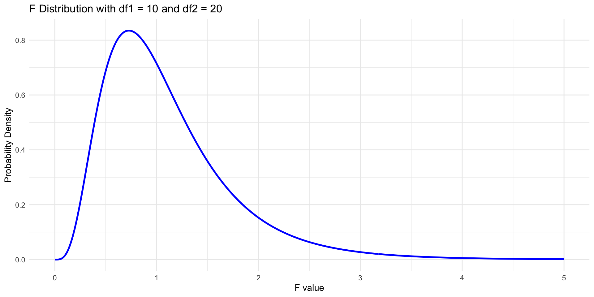

Week 12: One-way ANOVA
KIN 610 - Spring 2023
Dr. Ovande Furtado Jr
Credits
Sample data
Intro to One-way ANOVA
One-way Analysis of Variance (ANOVA) is a statistical technique used to compare the means of three or more groups. It is an extension of the t-test, which can only compare the means of two groups. The main purpose of one-way ANOVA is to determine if there are any significant differences among the group means.
Hypotheses in One-way ANOVA
- Null Hypothesis (H0): All group means are equal.
- Alternative Hypothesis (H1): At least one group mean is different.
One-way ANOVA Process
- State the null and alternative hypotheses.
- Calculate the test statistic (F-statistic) using the ANOVA table.
- Determine the critical value based on the chosen significance level (alpha) and degrees of freedom.
- Compare the test statistic to the critical value.
- Make a decision about the null hypothesis.
Post-hoc Tests
If the null hypothesis is rejected, post-hoc tests can be conducted to identify the specific group differences.
Equations
Sum of Squares Between groups (SSB)
- Measures the variability between the group means
- Quantifies differences in the means of different groups compared to the grand mean
- Larger SSB value indicates greater difference between group means
- Suggests factor being studied may have significant impact on the outcome
Sum of Squares Within groups (SSW)
- Measures the variability within each group
- Represents dispersion of individual data points around their respective group means
- Larger SSW value indicates more variability within the groups
- May be due to random errors or other factors not accounted for in the study
Key Differences Between SSB and SSW
- SSB: concerned with variability between group means
- SSW: focuses on variability within each group
- SSB: identifies the effect of the factor being studied
- SSW: accounts for random errors and other unexplained factors
F-Ratio in One-Way ANOVA
- Test statistic for determining statistically significant differences between group means
- F-ratio = Mean Square Between groups (MSB) / Mean Square Within groups (MSW)
- MSB = SSB / degrees of freedom between groups
- MSW = SSW / degrees of freedom within groups
- Larger F-ratio indicates greater between-group variability than within-group variability
- Suggests differences between group means are statistically significant
Calculate the sum of squares:
Sum of squares is calculated using the following components:
Sum of squares between groups (SSB): It measures the variability among group means.
\[ SSB = Σk(Ŷi. - Ŷ..)² / ni \]
where k is the number of groups, Ŷi. is the mean of group i, Ŷ.. is the grand mean, and ni is the number of observations in group i.
Sum of squares within groups (SSW): It measures the variability within each group.
\[ SSW = ΣΣ(Yij - Ŷi.)² \]
where Yij is the observation j in group i, and Ŷi. is the mean of group i.
Total sum of squares (SST): It measures the total variability in the data.
\[ SST = ΣΣ(Yij - Ŷ..)² \]
Calculate the F-ratio
The F-ratio is calculated using the mean squares, which are obtained by dividing the sum of squares by their respective degrees of freedom.
Mean squares between groups (MSB):
\[ MSB = SSB / (k - 1) \]
where k is the number of groups.
Mean squares within groups (MSW):
\[ MSW = SSW / (N - k) \]
where N is the total number of observations.
F-ratio:
\[ F = MSB / MSW \]
The F-ratio follows an F-distribution with (k - 1) and (N - k) degrees of freedom. The F-ratio is then compared to the critical value from the F-distribution table at a given significance level (usually α = 0.05) to determine if the null hypothesis can be rejected.
F Distribution
Intro
The F distribution, also known as the Fisher-Snedecor distribution, is a continuous probability distribution that is widely used in statistical hypothesis testing, particularly in the analysis of variance (ANOVA). It is named after Ronald A. Fisher and George W. Snedecor, two prominent statisticians who contributed significantly to its development.
Characteristics of the F Distribution
The F distribution has two important parameters: degrees of freedom for the numerator (df1) and degrees of freedom for the denominator (df2). These parameters define the shape of the distribution. Some key characteristics of the F distribution are:
- It is always non-negative, as it represents the ratio of two chi-square distributions.
- It is asymmetric and positively skewed, with a longer tail on the right side.
- The peak of the distribution shifts to the right as the degrees of freedom increase.
- As both degrees of freedom approach infinity, the F distribution converges to a normal distribution.
Applications of the F Distribution in ANOVA
The F distribution is central to the analysis of variance (ANOVA) and other statistical tests that involve comparing variances or assessing the effects of different factors on a response variable. In these applications, an F statistic is calculated as the ratio of two mean square values (MS), which are derived from sums of squares (SS) and degrees of freedom:
F = (MS_between groups) / (MS_within groups)
- The numerator (MS_between groups) represents the variability between the groups
- The denominator (MS_within groups) represents the variability within the groups
- F statistic is used in ANOVA (Analysis of Variance) to compare variances between groups
- It measures the ratio of variability between groups to the variability within groups
F Statistic and Group Differences
- F statistic close to 1: No significant difference between groups
- F statistic much greater than 1: Significant effect of the factor being tested
Hypothesis Testing with F Statistic
- Compare the calculated F statistic to a critical value from the F distribution
- Use appropriate degrees of freedom
- If F statistic > critical value, reject the null hypothesis
- A significant F statistic suggests a significant effect of the factor being tested
Measure of effect size
- Common measures of effect size for one-way ANOVA include eta-squared (\(\eta^2\)), partial eta-squared (\(\eta_p^2\)), and omega-squared (\(\omega^2\)).
Eta-squared (\(\eta^2\))
- Proportion of variance in the dependent variable explained by the independent variable.
- Ranges from 0 to 1.
- Equation: \(\eta^2 = \frac{SS_{between}}{SS_{total}}\)
- Rule of thumb: 0.01 (small), 0.06 (medium), 0.14 (large) effect sizes.
Partial eta-squared (\(\eta_p^2\))
- Variation of eta-squared that takes into account the degrees of freedom associated with the residual error term.
- Can be less biased in certain situations.
- Equation: \(\eta_p^2 = \frac{SS_{between}}{SS_{between} + SS_{error}}\)
- Same rule of thumb as eta-squared.
Omega-squared (\(\omega^2\))
- Estimates the true population effect size.
- Typically used when the sample size is small and/or the population effect size is unknown.
- Equation: \(\omega^2 = \frac{SS_{between} - (df_{between} \times MS_{error})}{SS_{total} + MS_{error}}\)
- Slightly different rule of thumb: 0.01 (small), 0.06 (medium), 0.14 (large) effect sizes.
Note: In these equations, \(SS_{between}\) represents the sum of squares between groups, \(SS_{total}\) represents the total sum of squares, \(SS_{error}\) represents the sum of squares error (also known as the residual sum of squares), \(df_{between}\) represents the degrees of freedom between groups, and \(MS_{error}\) represents the mean square error (calculated as \(SS_{error} / df_{error}\)).
Post-hoc analysis
- One-way ANOVA determines significant differences among means of 3 or more groups.
- Post-hoc tests identify pairs of group means that differ significantly from each other.
- This presentation will cover common post-hoc tests and factors to consider when selecting the appropriate test.
Common Post-hoc Tests
Tukey’s HSD Test
- Widely used for pairwise comparisons with equal variances.
- Controls experiment-wise Type I error rate.
- Most powerful test with equal sample sizes.
Bonferroni Test
- Adjusts significance level by the number of pairwise comparisons.
- More conservative than Tukey’s HSD.
- Can be used with equal or unequal sample sizes.
Scheffé’s Test
- More conservative than Tukey’s HSD and Bonferroni.
- Allows any linear combination of means (not just pairwise comparisons).
- Suitable for complex planned comparisons.
Games-Howell Test
- Designed for unequal variances.
- Uses Welch-Satterthwaite degrees of freedom.
- Suitable for unequal sample sizes.
Factors to Consider
Assumption of Equal Variances
- Tukey’s HSD, Bonferroni, or Scheffé’s if met.
- Games-Howell if not met.
Sample Sizes
- Tukey’s HSD for equal sample sizes.
- Bonferroni or Games-Howell for unequal sample sizes.
Conservativeness vs. Power
- Tukey’s HSD is more powerful but less conservative.
- Bonferroni and Scheffé’s are more conservative but less powerful.
- Balance trade-off between Type I and Type II error rates.
Result interpretation
ANOVA output includes:
- Degrees of freedom for the between-group factor and the residual error term
- Sum of squares for the between-group factor and the residual error term
- Mean squares for the between-group factor and the residual error term
- F-statistic and p-value associated with the F-statistic
To interpret the results, consider both the F-statistic and p-value:
- F-statistic indicates significant differences between group means
- P-value tells you whether those differences are statistically significant
- If p-value < alpha level, then evidence of significant difference between at least 2 group means
Examining effect size:
- Common measures: eta-squared (\(\eta^2\)), partial eta-squared (\(\eta_p^2\)), and omega-squared (\(\omega^2\))
- Larger effect sizes indicate more meaningful differences between groups
One-Way ANOVA Example
Research question
- Is there a significant difference in flexibility among participants in the three different exercise programs (A, B, and C)?
Hypothesis Statements
- Null Hypothesis (H0): \(\mu_{A} = \mu_{B} = \mu_{C}\)
- There is no significant difference in flexibility among the three exercise programs.
- Alternative Hypothesis (H1): \(\mu_{A} \neq \mu_{B} \text{ or } \mu_{A} \neq \mu_{C} \text{ or } \mu_{B} \neq \mu_{C}\)
- There is a significant difference in flexibility among at least two of the exercise programs.
ANOVA Test Results
- The one-way ANOVA test was conducted with a significance level of \(\alpha = 0.05\).
- The test statistic value was F(2, 27) = 4.98, and the p-value was 0.014.
- Since the p-value is less than the significance level, we reject the null hypothesis.
- We can conclude that there is a significant difference in flexibility among at least two of the exercise programs.
Post Hoc Tests
- Since the one-way ANOVA test indicated a significant difference, we can conduct post hoc tests to determine which pairs of exercise programs have a significant difference in flexibility.
- Tukey’s HSD test was conducted with a significance level of \(\alpha = 0.05\).
- The test results indicated a significant difference in flexibility between exercise programs A and C, with a p-value of 0.013.
- No other pairs of exercise programs had a significant difference in flexibility.
Statistical Package
jamovi

jamovi - post hoc

Interpreting the results
- One-way ANOVA results
- Statistically significant difference in flexibility scores between the three groups
- F-value of 53.65 and p-value of 2.71e-12
- At least one group mean is significantly different from the others
- Tukey HSD test results
- Difference in flexibility scores between groups A and B is significantly different from 0
- 95% confidence interval: 5.97 to 10.96, p-value of 0
- Group B has significantly higher flexibility score than group A
- No significant difference between groups A and C
- Confidence interval (-3.83 to 1.16) includes 0, p-value of 0.40
- Comparison between groups B and C shows significant difference
- Group B has significantly higher flexibility score than group C
- Confidence interval: -12.29 to -7.31, p-value of 0
- Conclusion
- Significant differences in flexibility scores between at least two of the three groups
- Group B has significantly higher flexibility score than both groups A and C
- No significant difference in flexibility scores between groups A and C.
Results of One-Way ANOVA on Flexibility Scores
A one-way analysis of variance (ANOVA) was conducted to determine whether there were significant differences in flexibility scores among three groups. Results revealed a significant main effect of group on flexibility scores, \(F(2, 42) = 53.65, p < .001, \eta_{p}^{2} = .72\). Post hoc pairwise comparisons using Tukey’s HSD test showed that group B had significantly higher flexibility scores compared to both groups A (\(p < .001\)) and C (\(p < .001\)). However, no significant difference was found between groups A and C (\(p = .40\)). These findings suggest that group B had significantly better flexibility scores than groups A and C, while groups A and C did not differ significantly in terms of their flexibility scores.
Nonparametric
Intro
The nonparametric equivalent to the one-way ANOVA is the Kruskal-Wallis test. It is used when the assumptions of normality and homogeneity of variance are not met.
The Kruskal-Wallis test ranks the data and compares the medians of the groups instead of the means.
Like the one-way ANOVA, it tests the null hypothesis that there is no difference between the groups, and the alternative hypothesis that at least one group differs from the others.
Jamovi
Open the data set in jamovi.
Click on the “ANOVA” button and under “Nonparametric Tests”, select
One-way ANOVA Kruskal-Wallis.Drag the dependent variable to the “Test Variable” box and the grouping variable to the “Factor” box.
Click “Run” to obtain the test results.
SPSS
Open the data set in SPSS.
Click on “Analyze” and select “Nonparametric Tests” from the drop-down menu.
Select “Independent Samples” from the list of available tests.
Move the dependent variable to the “Test Variable List” box and the grouping variable to the “Grouping Variable” box.
Click on the “Options” button and select “Kruskal-Wallis H” from the list of available tests.
Click “Continue” and then “OK” to run the test.
R
Open R and load the necessary packages (e.g., “tidyverse”, “rstatix”).
Load the data set into R using the
read.csv()orread.table()function.Use the
kruskal.test()function to conduct the Kruskal-Wallis test, specifying the dependent variable and grouping variable.Use the
summary()function to obtain the test results.(Optional) Use the
dunn_test()function from the “rstatix” package to conduct post-hoc pairwise comparisons.